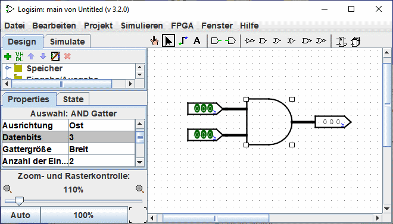
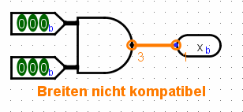

Erstellen von Leitungsbündeln
In einfacheren Schaltungen in Logisim werden Leitungen häufig nur einzelne Bits transportieren. Aber Logisim erlaubt es Ihnen auch Leitungsbündel zu erstellen, die mehrere Bits auf einmal übertragen. Die Anzahl der Bits, die gleichzeitig auf einem solchen Bündel transportiert werden, ist dessen Datenbits.
Jedem Eingang und jedem Ausgang eines jeden Bauelements ist eine bestimmte Bitbreite zugeordnet. Häufig handelt es sich um eine Breite von einem Bit, die sich auch nicht ändern läßt. Aber viele der eingebauten Bauelemente in Logisim besitzen eine einstellbare Bitbreite an ihren Ein- und Ausgängen.
In der folgenden Bildschirmkopie wird eine Testschaltung gezeigt, die die bitweise AND-Verknüpfung zweier drei Bit breiter Eingangswerte durchführt. Sehen Sie, wie das drei Bit breite Ausgangssignal die bitweise Verknüpfung der zwei Eingangssignale darstellt. In diesem Beispiel wurden alle Bauelemente über das Datenbits-Attribut auf eine Breite von drei Bit konfiguriert. Dies sehen Sie in der Bildschirmkopie an dem Wert 3 für das Datenbits-Feld.

Alle Bauelemente von Logisim legen die Bitbreite ihrer Ein- und Ausgänge fest. Die Bitbreite einer Leitung dagegen ist undefiniert. Erst wenn die Leitung an ein Bauelement angeschlossen wird, paßt sich diese an dessen Bitbreite an. Wenn eine Leitung an zwei Komponenten mit unterschiedlicher Bitbreite angeschlossen wird, meldet Logisim dies mit der Fehlermeldung "Breiten nicht kompatibel" und die betroffene Leitung wird in Orange dargestellt. In dem folgenden Bild wurde die Bitbreite des Ausgangs-Pins auf 1 gesetzt, und Logisim beklagt sich entsprechend.

Leitungen, die inkompatible Anschlüsse verbinden (und daher in Orange dargestellt werden), führen keine Werte.
Im Fall von Einzelbit-Leitungen sehen Sie auf einen Blick, welchen Wert die Leitung gerade führt, denn Logisim färbt diese Leitungen hellgrün oder dunkelgrün, abhängig vom aktuellen Wert auf der Leitung. Für Mehrbit-Leitungen werden keine Werte auf diese Weise dargestellt: diese Leitungen sind immer schwarz. Sie können eine solche Leitung aber mit dem Schaltwerkzeug( ) anklicken.
) anklicken.

Diese Testfunktion ist besonders hilfreich bei der Verwendung von Mehrbit-Leitungen.
Weiter: Verteiler.